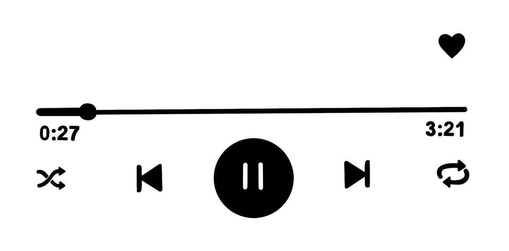

An audio signal is a representation of sound, typically using either a changing level of electrical voltage for analog signals or a series of binary numbers for digital signals. Audio signals have frequencies in the audio frequency range of roughly 20 to 20,000 Hz, which corresponds to the lower and upper limits of human hearing. Audio signals may be synthesized directly, or may originate at a transducer such as a microphone, musical instrument pickup, phonograph cartridge, or tape head. Loudspeakers or headphones convert an electrical audio signal back into sound.
